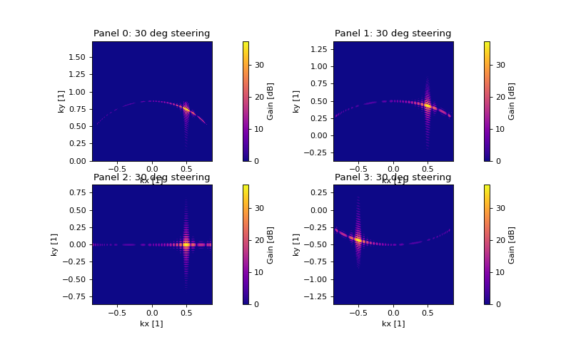
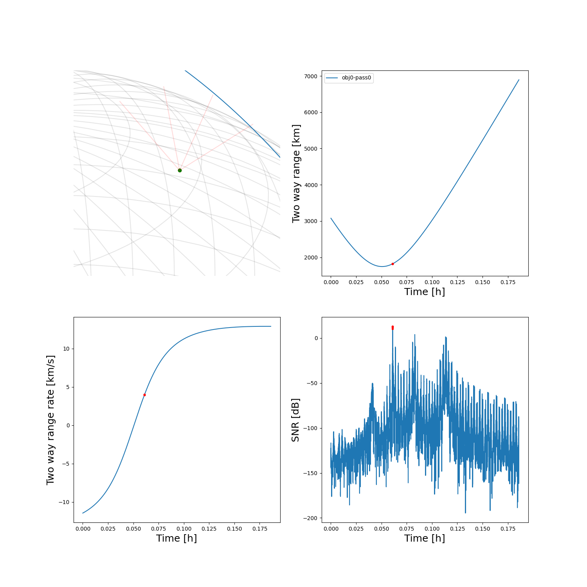

Note
Click here to download the full example code
Using scans on alternative parameters¶


Out:
/home/danielk/IRF/IRF_GITLAB/pyant/pyant/plotting.py:236: RuntimeWarning: invalid value encountered in log10
SdB = np.log10(S)*10.0
Temporal points obj 0: 27328
--------------------------------------- Performance analysis --------------------------------------
Name | Executions | Mean time | Total time
--------------------------------------------------------+--------------+---------------+--------------
equidistant_sampling | 1 | 1.95503e-04 s | 0.00 %
get_state | 1 | 2.56772e-01 s | 4.55 %
find_passes | 1 | 6.34050e-03 s | 0.11 %
Obs.Param.:calculate_observation:get_state | 1 | 1.28603e-01 s | 2.28 %
Obs.Param.:calculate_observation:enus,range,range_rate | 1 | 8.59261e-04 s | 0.02 %
Obs.Param.:calculate_observation:snr-step:gain | 6695 | 7.48235e-04 s | 88.72 %
Obs.Param.:calculate_observation:snr-step:snr | 6695 | 1.80442e-05 s | 2.14 %
Obs.Param.:calculate_observation:snr-step | 6695 | 7.79843e-04 s | 92.46 %
Obs.Param.:calculate_observation:generator | 1 | 5.25253e+00 s | 93.02 %
Obs.Param.:calculate_observation | 1 | 5.38251e+00 s | 95.32 %
observe_passes | 1 | 5.38322e+00 s | 95.33 %
total | 1 | 5.64664e+00 s | 100.00 %
---------------------------------------------------------------------------------------------------
import numpy as np
import matplotlib.pyplot as plt
from mpl_toolkits.mplot3d import Axes3D
from matplotlib.animation import FuncAnimation
import pyant
import sorts
from sorts.radar.scans import Fence
from sorts import RadarController
from sorts.scheduler import StaticList, ObservedParameters
from sorts import SpaceObject
from sorts.profiling import Profiler
from sorts.propagator import SGP4
Prop_cls = SGP4
Prop_opts = dict(
settings = dict(
out_frame='ITRF',
),
)
radar = sorts.radars.tsdr_phased_fence
radar.tx[0].beam.phase_steering = 30.0
fig, axes = plt.subplots(2,2,figsize=(10,6),dpi=80)
axes = axes.flatten()
for i in range(4):
pyant.plotting.gain_heatmap(
radar.tx[0].beam,
resolution=901,
min_elevation=30.0,
ax=axes[i],
ind = {
"pointing":i,
},
)
axes[i].set_title(f'Panel {i}: {int(radar.tx[0].beam.phase_steering)} deg steering')
radar.tx[0].beam.phase_steering = 0.0
scan = Fence(azimuth=0, num=100, dwell=0.1, min_elevation=30)
end_t = 3600.0
p = Profiler()
logger = sorts.profiling.get_logger('scanning')
objs = [
SpaceObject(
Prop_cls,
propagator_options = Prop_opts,
a = 7200e3,
e = 0.02,
i = 75,
raan = 86,
aop = 0,
mu0 = 60,
epoch = 53005.0,
parameters = dict(
d = 0.1,
),
),
]
class PhasedTSDR(RadarController):
'''
'''
def __init__(self, radar, scan):
super().__init__(radar.copy())
self.scan = scan
def generator(self, t, **kwargs):
els = self.scan.pointing(t)
els = els[1,:] #just elevations
for ti in range(len(t)):
for st in self.radar.tx + self.radar.rx:
st.beam.phase_steering = els[ti]
yield self.radar, self.default_meta()
radar_ctrl = PhasedTSDR(radar = radar, scan=scan)
radar_ctrl.t = np.arange(0, end_t, scan.dwell())
class ObservedScanning(StaticList, ObservedParameters):
pass
p.start('total')
scheduler = ObservedScanning(
radar = radar_ctrl.radar,
controllers = [radar_ctrl],
logger = logger,
profiler = p,
)
datas = []
passes = []
states = []
for ind in range(len(objs)):
p.start('equidistant_sampling')
t = sorts.equidistant_sampling(
orbit = objs[ind].state,
start_t = 0,
end_t = end_t,
max_dpos=1e3,
)
p.stop('equidistant_sampling')
print(f'Temporal points obj {ind}: {len(t)}')
p.start('get_state')
states += [objs[ind].get_state(t)]
p.stop('get_state')
p.start('find_passes')
#rename cache_data to something more descriptive
passes += [scheduler.radar.find_passes(t, states[ind], cache_data = True)]
p.stop('find_passes')
p.start('observe_passes')
data = scheduler.observe_passes(passes[ind], space_object = objs[ind], snr_limit=False)
p.stop('observe_passes')
datas.append(data)
p.stop('total')
print(p.fmt(normalize='total'))
fig = plt.figure(figsize=(15,15))
axes = [
[
fig.add_subplot(221, projection='3d'),
fig.add_subplot(222),
],
[
fig.add_subplot(223),
fig.add_subplot(224),
],
]
sorts.plotting.grid_earth(axes[0][0])
for tx in scheduler.radar.tx:
axes[0][0].plot([tx.ecef[0]],[tx.ecef[1]],[tx.ecef[2]],'or')
for rx in scheduler.radar.rx:
axes[0][0].plot([rx.ecef[0]],[rx.ecef[1]],[rx.ecef[2]],'og')
for tx in radar.tx:
point_tx = tx.pointing_ecef/np.linalg.norm(tx.pointing_ecef, axis=0)*1000e3 + tx.ecef[:,None]
for ti in range(point_tx.shape[1]):
axes[0][0].plot([tx.ecef[0], point_tx[0,ti]], [tx.ecef[1], point_tx[1,ti]], [tx.ecef[2], point_tx[2,ti]], 'r-', alpha=0.15)
for ind in range(len(objs)):
for pi in range(len(passes[ind][0][0])):
ps = passes[ind][0][0][pi]
dat = datas[ind][0][0][pi]
axes[0][0].plot(states[ind][0,ps.inds], states[ind][1,ps.inds], states[ind][2,ps.inds], '-')
if dat is not None:
SNRdB = 10*np.log10(dat['snr'])
det_inds = SNRdB > 10.0
axes[0][1].plot(dat['t']/3600.0, dat['range']*1e-3, '-', label=f'obj{ind}-pass{pi}')
axes[1][0].plot(dat['t']/3600.0, dat['range_rate']*1e-3, '-')
axes[1][1].plot(dat['t']/3600.0, SNRdB, '-')
axes[0][1].plot(dat['t'][det_inds]/3600.0, dat['range'][det_inds]*1e-3, '.r')
axes[1][0].plot(dat['t'][det_inds]/3600.0, dat['range_rate'][det_inds]*1e-3, '.r')
axes[1][1].plot(dat['t'][det_inds]/3600.0, SNRdB[det_inds], '.r')
# axes[1][1].set_ylim([0, None])
font_ = 18
axes[0][1].set_xlabel('Time [h]', fontsize=font_)
axes[1][0].set_xlabel('Time [h]', fontsize=font_)
axes[1][1].set_xlabel('Time [h]', fontsize=font_)
axes[0][1].set_ylabel('Two way range [km]', fontsize=font_)
axes[1][0].set_ylabel('Two way range rate [km/s]', fontsize=font_)
axes[1][1].set_ylabel('SNR [dB]', fontsize=font_)
axes[0][1].legend()
dr = 600e3
axes[0][0].set_xlim([scheduler.radar.tx[0].ecef[0]-dr, scheduler.radar.tx[0].ecef[0]+dr])
axes[0][0].set_ylim([scheduler.radar.tx[0].ecef[1]-dr, scheduler.radar.tx[0].ecef[1]+dr])
axes[0][0].set_zlim([scheduler.radar.tx[0].ecef[2]-dr, scheduler.radar.tx[0].ecef[2]+dr])
plt.show()
Total running time of the script: ( 0 minutes 8.585 seconds)